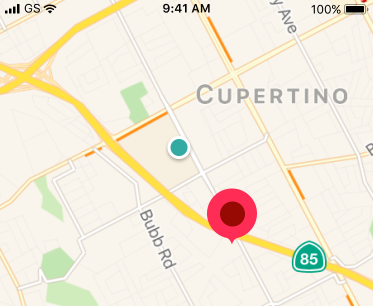

60 Eastbound to Randolph/Harbor Dr
124 Eastbound to Navy Pier
151 Northbound to Devon/Clark
J14 Southbound to 103rd/Stony Island
124 Southbound to Navy Pier
6x Reroute to Jackson Park Express
4 OUT OF SERVICE to Cottage Grove
20 OUT OF SERVICE to Madison
157 OUT OF SERVICE to Streeterville/Taylor